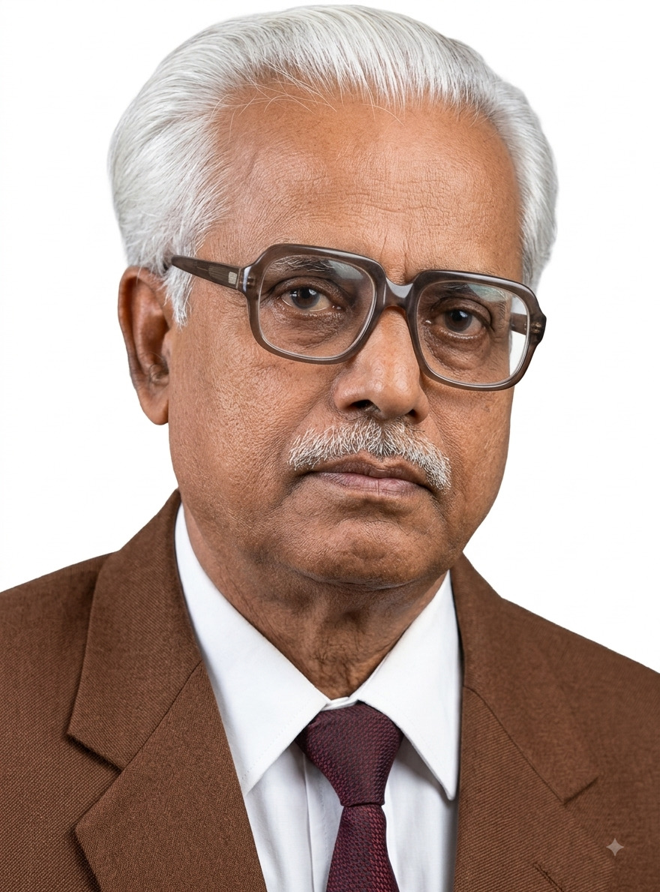

Profile at a Glance
Qualification
B.V.Sc., Ph.D., F.I.S.S.A.R.
Position
Former Vice-Chancellor,
Tamil Nadu Veterinary and
Animal Sciences University
Area of Contribution
Veterinary Microbiology,
Virology, Veterinary Education
and Research
Dr. P. Richard Masillamony
B.V.Sc., Ph.D., F.I.S.S.A.R.
Former Vice-Chancellor
Tamil Nadu Veterinary and
Animal Sciences University
Academic Foundation and Distinction
Dr. P. Richard Masillamony obtained his B.V.Sc. and M.V.Sc. degrees from Madras Veterinary College in 1954 and 1959, respectively.
He subsequently obtained his Ph.D. from Christian Medical College, Vellore, in 1973.
He had the distinction of receiving the Dr. A. Lakshmanaswamy Mudaliar Medal of the University of Madras as the best M.V.Sc. candidate.
He was also honoured with the Jawaharlal Nehru Award of the Indian Council of Agricultural Research for the best Ph.D. thesis in Veterinary Microbiology. He was the first veterinarian to receive this award.
Recognition and Honours
Dr. Masillamony was the proud recipient of the prestigious National Unity Award of the All-India National Unity Conference in 1991, in recognition of his services and achievements in the cause of national integration.
In 1992, he was honoured with the Fellowship of the Indian Society for the Study of Animal Reproduction.
He was also awarded the National Fellowship of the Indian Council of Social Sciences in the same year.
The First Vice-Chancellor of TANUVAS
The Tamil Nadu Veterinary and Animal Sciences University (TANUVAS), the first veterinary university in India, was established in 1989.
At that historic stage, Dr. P. Richard Masillamony was serving as Dean of Madras Veterinary College.
He was appointed the first Vice-Chancellor of TANUVAS by the Government of Tamil Nadu.
At the time, the Government was headed by Chief Minister Thiru M. Karunanidhi, while the Governor of Tamil Nadu and Chancellor of the newly formed University was Dr. P. C. Alexander.
Leadership Before the Vice-Chancellorship
Prior to his appointment as Vice-Chancellor, Dr. Masillamony had held several important academic and research positions.
He served as Director of Research (Animal Sciences) in Tamil Nadu Agricultural University and as Professor and Head, Department of Veterinary Microbiology, Madras Veterinary College.
These responsibilities gave him extensive experience in research management, postgraduate education and academic administration.
A Pioneer in Veterinary Virology
Dr. Masillamony was the first to complete doctoral research in Virology under Prof. T. Jacob John of Christian Medical College, Vellore.
His research was on rotavirus, an enteric virus associated with paediatric diarrhoeal disease.
At a time when modern veterinary virology was still developing in India, his work helped strengthen scientific interest in infectious diseases and veterinary microbiology.
Mentor to a Generation of Researchers
Under the guidance of Dr. P. Richard Masillamony, several research scholars successfully completed their Ph.D. programmes in Veterinary Microbiology.
Among them were Dr. P. Mahalingam, Dr. A. T. Venugopalan and Dr. K. S. Palaniswami.
His influence therefore extended beyond his own research contributions to the development of succeeding generations of veterinary microbiologists and researchers.
Contribution to Professional Scientific Societies
Dr. Masillamony also played an important role in the development of professional scientific organisations.
He was instrumental in the registration of the Indian Society for Veterinary Immunology and Biotechnology (ISVIB) during the 1970s.
Through such initiatives, he helped provide a professional platform for scientists working in veterinary immunology, microbiology and biotechnology.
An Untimely Loss
While he was emerging as a nationally and internationally recognised researcher in the control of infectious diseases, his life came to an unexpected and tragic end.
Dr. P. Richard Masillamony died in a road accident near Cuddalore on 3 June 1992.
His affectionate wife also lost her life in the unfortunate accident.
He is survived by his two daughters and grandchildren.
Dr. P. Richard Masillamony Oration Award
In recognition of his pioneering services to the Indian Society for Veterinary Immunology and Biotechnology, the Society instituted the Dr. P. Richard Masillamony Oration Award in his memory.
The prestigious oration is delivered by eminent scientists during the inaugural session of the annual convention of ISVIB.
The memorial oration continues to perpetuate his contributions to veterinary microbiology, immunology and biotechnology.
An Enduring Legacy
Dr. P. Richard Masillamony combined the qualities of an accomplished microbiologist, research guide, academic administrator and institution builder.
His distinction as the first Vice-Chancellor of TANUVAS gives him a unique place in the history of veterinary education in Tamil Nadu.
His contributions to Veterinary Microbiology, Virology, research training and professional scientific organisations continue to be remembered with admiration.
Long live his glory.
Reminiscence compiled by Dr. K. S. Palaniswami, General Secretary, TTPA.
Audio narration will be added here when available.
Additional historical photographs will be added here.